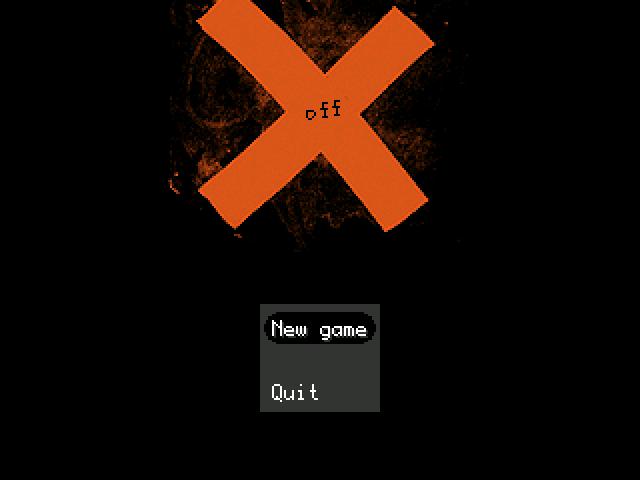
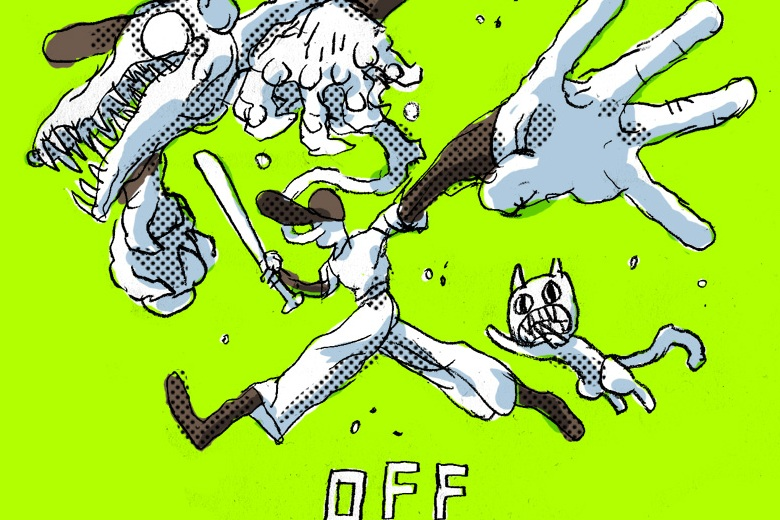

Los videojuegos independientes (comúnmente conocidos como indie games) son videojuegos creados por individuos o pequeños grupos, sin apoyo financiero de distribuidores. Los videojuegos independientes a menudo se centran en la innovación y se basan en la distribución digital. Los juegos indie han visto un aumento en los últimos años, principalmente debido a los nuevos métodos de distribución en línea y herramientas de desarrollo.
Los orígenes de los videojuegos independientes se remontan a los años 1970, cuando prácticamente no existía una industria de los videojuegos. A medida que las empresas de videojuegos crecían, éstas tomaban el talento de los programadores, aunque en ningún momento lo erradicaban. Ambas partes han seguido coexistiendo. Durante los años 1990, los videojuegos independientes eran en su mayoría distribuidos como shareware o compartidos de amigo a amigo, y por lo tanto conocidos como "videojuegos shareware".
